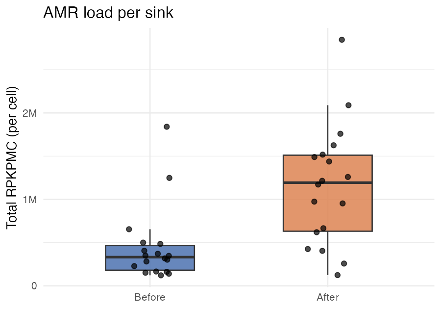
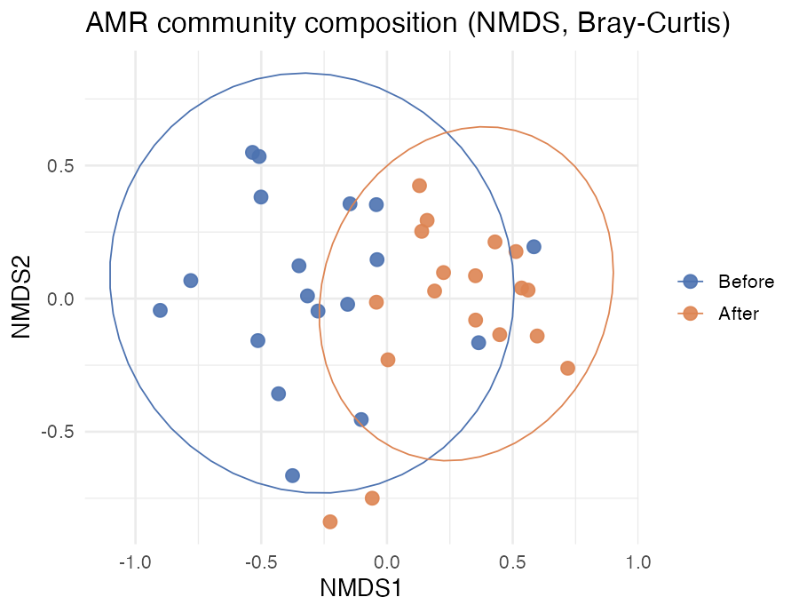
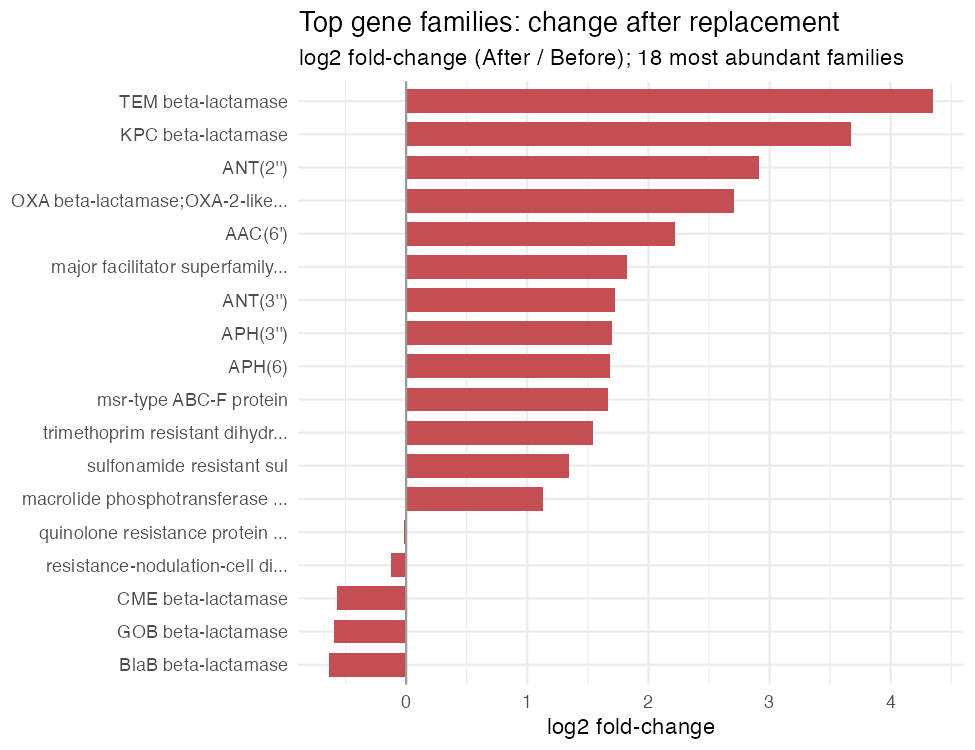
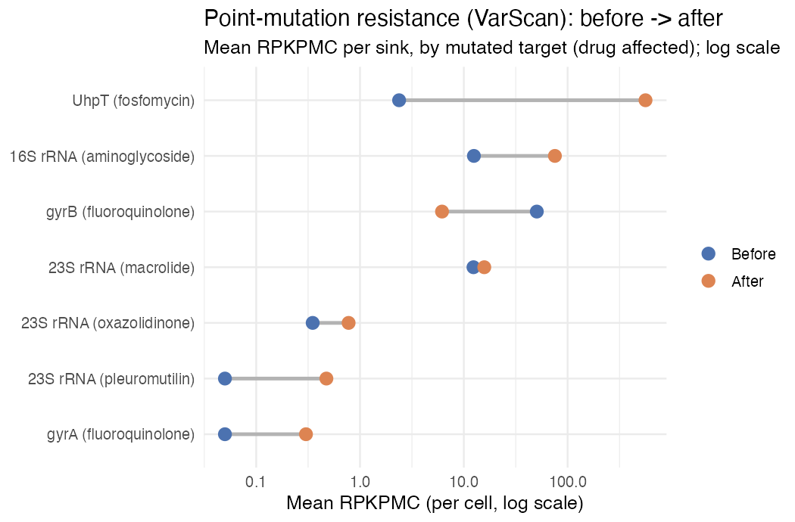

Step 3 · Analysis — reading the resistome
What do the numbers say? How much resistance, of what kind, driven by which genes — and the mutations a gene catalogue can’t see.
You’ve run the machinery. Now for the point of it all: what do the numbers say?
The 10,000-read subset was perfect for learning the commands, but far too shallow to say anything biological. So this page runs on the full-depth reports that ship in data/reports_full/ — the real published run, all 36 sinks. Everything below is plain R you can paste into a session started at the repo root.
The story of these sinks, in four questions:
- How much resistance is there — and did it change?
- What kind — did the composition of the resistome shift?
- Which genes drove the change?
- What point mutations came along too — the resistance a gene catalogue can’t see?
Setup
library(readr); library(dplyr); library(tidyr)
library(ggplot2); library(forcats); library(stringr); library(vegan)
INT <- c(Before = "#4C72B0", After = "#DD8452") # a consistent palette
meta <- read_csv("data/reports_full/metadata.csv", show_col_types = FALSE) |>
rename(sample = 1) |>
mutate(intervention = factor(if_else(Intervention == "Old", "Before", "After"),
levels = c("Before", "After")))
amr <- read_tsv("data/reports_full/SR_homscan_RPKPMC.tsv", show_col_types = FALSE)amr is a wide table: one row per AMR gene, five annotation columns (AMR_Gene_Family, ARO, ARO_Name, Drug_Class, Resistance_Mechanism), then one column of RPKPMC per sample. Let’s melt it long and attach the metadata:
anno <- c("AMR_Gene_Family","ARO","ARO_Name","Drug_Class","Resistance_Mechanism")
long <- amr |>
pivot_longer(-all_of(anno), names_to = "sample", values_to = "rpkpmc") |>
left_join(meta, by = "sample")RPKPMC is ResScan’s preferred default metric: resistance-gene copies per bacterial cell, calibrated against universal single-copy genes rather than against total reads. Because the denominator is bacterial cells, it stays comparable across samples of different depth and composition — which is also why the host-removal step pays off: stray human reads match neither the AMR genes nor the bacterial markers, so they can’t silently inflate or deflate the numbers the way they would with a total-reads metric like RPKM. ResScan reports a whole family of metrics alongside it (see the output reference); RPKPMC is simply the one to reach for by default.
1 · How much? AMR load per sink
Sum RPKPMC across all genes in a sample and you get its total resistance load — copies of resistance per cell, summed over every gene detected.
per_sample <- long |>
group_by(sample, intervention) |>
summarise(total_load = sum(rpkpmc), n_genes = sum(rpkpmc > 0), .groups = "drop")
ggplot(per_sample, aes(intervention, total_load, fill = intervention)) +
geom_boxplot(width = .5, alpha = .85, outlier.shape = NA) +
geom_jitter(width = .12, size = 2, alpha = .7) +
scale_fill_manual(values = INT) +
scale_y_continuous(labels = scales::label_number(scale_cut = scales::cut_short_scale())) +
labs(title = "AMR load per sink", x = NULL, y = "Total RPKPMC (per cell)") +
theme_minimal(base_size = 13) + theme(legend.position = "none")
The median load more than tripled — roughly 332,000 → 1.19 million RPKPMC per sink. Replacing the plumbing didn’t reset the resistome; the new drains came back carrying more resistance per cell than the ones they replaced. (This is the headline of Kotay et al. 2025, reproduced from raw reads with your own hands.)
2 · What kind? Composition shift
More resistance is one thing; different resistance is another. To ask whether the whole community’s makeup shifted, we put every sample in “resistome space” (each gene a dimension), measure how dissimilar samples are (Bray–Curtis), and squash that down to two dimensions with NMDS.
comm <- t(as.matrix(amr[, meta$sample])) # samples x genes
set.seed(1)
nmds <- metaMDS(comm, distance = "bray", trace = FALSE)
sc <- as.data.frame(vegan::scores(nmds, "sites")) |>
tibble::rownames_to_column("sample") |>
left_join(meta, "sample")
ggplot(sc, aes(NMDS1, NMDS2, colour = intervention)) +
geom_point(size = 3, alpha = .9) +
stat_ellipse(aes(group = intervention), linewidth = .4) +
scale_colour_manual(values = INT) +
labs(title = "AMR community composition (NMDS, Bray-Curtis)", colour = NULL) +
theme_minimal(base_size = 13)
The two clouds overlap but pull apart — Before sinks sit left, After sinks shift right. So it isn’t only more resistance; the kind of resistance moved too. The overlap is the honest part of the picture: this is a shift in a noisy biological system, not a clean switch.
3 · Which genes drove it?
Finally, name names. Roll RPKPMC up to gene family, average within each group, and rank families by how much they changed (log2 fold-change, After / Before).
fam <- long |>
group_by(AMR_Gene_Family, sample, intervention) |>
summarise(load = sum(rpkpmc), .groups = "drop") |> # per-sample family total
group_by(AMR_Gene_Family, intervention) |>
summarise(mean_load = mean(load), .groups = "drop") |> # then mean across sinks
pivot_wider(names_from = intervention, values_from = mean_load) |>
mutate(log2fc = log2((After + 1) / (Before + 1)),
family = stringr::str_trunc(AMR_Gene_Family, 32)) |>
slice_max(After + Before, n = 18) # 18 most abundant families
ggplot(fam, aes(log2fc, fct_reorder(family, log2fc))) +
geom_col(fill = "#C44E52", width = .72) +
geom_vline(xintercept = 0, colour = "grey60") +
labs(title = "Top gene families: change after replacement",
subtitle = "log2 fold-change (After / Before); 18 most abundant families",
x = "log2 fold-change", y = NULL) +
theme_minimal(base_size = 11)
We sum genes within each sample first, then average across sinks — not one big mean() over every gene×sample cell. Average first and a family with many low-abundance genes gets washed out; the order of operations is the difference between seeing KPC at the top and missing it entirely.
Almost every abundant family rose, but two β-lactamases lead the board: TEM (log2fc ≈ 4.35) and KPC (≈ 3.67) — the carbapenem-resistance family behind much of the concern about hospital Klebsiella. Aminoglycoside families (ANT, AAC, APH) and efflux/MFS systems climbed too. A handful of environmental β-lactamases (BlaB, GOB, CME) went the other way — the incumbent drain community being replaced by a new one.
4 · The resistance a gene catalogue can’t see (VarScan)
Everything above counted acquired genes — resistance you can spot because a whole gene is present. But some of the most clinically important resistance isn’t a gene you gain; it’s a single base that changes in a gene you already have: one point mutation in gyrA and E. coli shrugs off fluoroquinolones; one in 16S rRNA and aminoglycosides stop working.
Tools that only catalogue genes are blind to this — the mutated gene looks identical to the normal one at the family level. ResScan’s VarScan module is built for exactly this job, and it’s a big part of what sets ResScan apart from other comprehensive AMR pipelines. It ships in the same run, in SR_varscan_*.tsv, on the same RPKPMC scale — so we can ask the same before/after question of point-mutation resistance.
var <- read_tsv("data/reports_full/SR_varscan_RPKPMC.tsv", show_col_types = FALSE)
vlong <- var |>
pivot_longer(-all_of(anno), names_to = "sample", values_to = "rpkpmc") |>
left_join(meta, by = "sample")
# burden: total point-mutation resistance, and how many distinct variants, per sink
vlong |>
group_by(sample, intervention) |>
summarise(total = sum(rpkpmc), n_var = sum(rpkpmc > 0), .groups = "drop") |>
group_by(intervention) |>
summarise(median_load = median(total), mean_variants = mean(n_var))The point-mutation burden rose about four-fold (median ≈ 26 → 104 RPKPMC), and the number of distinct resistance variants per sink went from ~1 to ~3. Now group by the mutated target and drug, and draw each target’s Before→After move on a log scale:
fam <- vlong |>
mutate(lab = case_when(
str_detect(AMR_Gene_Family, "16S|16s") ~ "16S rRNA (aminoglycoside)",
str_detect(AMR_Gene_Family, "23S") & str_detect(AMR_Gene_Family, "macrolide") ~ "23S rRNA (macrolide)",
str_detect(AMR_Gene_Family, "23S") & str_detect(AMR_Gene_Family, "oxazolidinone") ~ "23S rRNA (oxazolidinone)",
str_detect(AMR_Gene_Family, "23S") & str_detect(AMR_Gene_Family, "pleuromutilin") ~ "23S rRNA (pleuromutilin)",
str_detect(AMR_Gene_Family, "gyrA") ~ "gyrA (fluoroquinolone)",
str_detect(AMR_Gene_Family, "gyrB") ~ "gyrB (fluoroquinolone)",
str_detect(AMR_Gene_Family, "UhpT") ~ "UhpT (fosfomycin)",
TRUE ~ stringr::str_trunc(AMR_Gene_Family, 30))) |>
group_by(lab, sample, intervention) |>
summarise(load = sum(rpkpmc), .groups = "drop") |>
group_by(lab, intervention) |>
summarise(mean_load = mean(load), .groups = "drop") |>
pivot_wider(names_from = intervention, values_from = mean_load) |>
arrange(After + Before) |>
mutate(lab = factor(lab, levels = lab),
Before = pmax(Before, 0.05), After = pmax(After, 0.05)) # floor so 0s plot on log
ggplot(fam, aes(y = lab)) +
geom_segment(aes(x = Before, xend = After, yend = lab), colour = "grey70", linewidth = 1.1) +
geom_point(aes(x = Before, colour = "Before"), size = 3.4) +
geom_point(aes(x = After, colour = "After"), size = 3.4) +
scale_colour_manual(values = INT, breaks = c("Before", "After")) +
scale_x_log10() +
labs(title = "Point-mutation resistance (VarScan): before -> after",
subtitle = "Mean RPKPMC per sink, by mutated target (drug affected); log scale",
x = "Mean RPKPMC (per cell, log scale)", y = NULL, colour = NULL) +
theme_minimal(base_size = 12)
Read left-to-right, and the clinical picture is pointed. Fosfomycin-resistant UhpT mutations went from a whisper to the loudest signal in the panel (≈2 → 563). Aminoglycoside-conferring 16S rRNA mutations climbed six-fold, and fluoroquinolone-resistant gyrA — absent before — showed up after. The lone retreat was gyrB (the other fluoroquinolone target). (Points sitting at the far-left floor were not detected before the swap.)
None of this is in the gene-catalogue tables — it’s resistance encoded one base at a time, in drugs (fluoroquinolones, aminoglycosides, fosfomycin) that matter at the bedside. Miss VarScan and you’d have declared these sinks clean of it.
The take-home
Four views, one conclusion: after the drains were replaced, the sink resistome came back larger (load tripled), different (composition shifted), clinically pointier in its acquired genes (KPC/TEM β-lactamases led the rise), and carrying more point-mutation resistance to fluoroquinolones, aminoglycosides, and fosfomycin (VarScan) — the last of which a gene-catalogue tool would never have seen. New plumbing, same problem — arguably worse.
This is the teaching cut — four questions, four figures. The full study analysis carries the rest: per-variant VarScan detail, drug-class and resistance-mechanism breakdowns, per-room and per-period trends, and formal tests (PERMANOVA on the Bray–Curtis distances). The same tables in data/reports_full/ support all of it — the tools you’ve now run are all you need to get there.
Want to run this on your own samples? The Appendix covers the real human index, bring-your-own-reads, and cleanup.